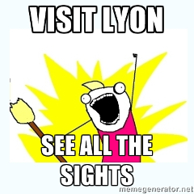

How to Ride the Métro
Lyon's Métro system is newer than the one in Paris, and it shows. Many of the trains are driverless, the cars are newer and more comfortable, and the tracks are smooth. There are also three funiculars in Lyon, and we'll give those a pass on the "smooth track" because they have so much character.
There are also trams and buses under the same authority, so your tickets are good on all modes of transportation. You'll probably be riding the trains to get to RuLu, and hopefully you will stay for the weekend to enjoy the city. The TCL site has links to navigation apps for iOS and Android to help you find your way. They're useful even if you don't speak French.
Step 1: Buy a ticket
On the weekend you might want to get a Day Pass so you can ride all you want without interruptions to buy another ticket. The day pass costs about the same as three tickets so it's a pretty good deal if you're planning to take two round-trips or more in a single day. For the days of RuLu, though, you might split a Carnet of 10 tickets with a friend (you are bringing friends, aren't you?) and you'll have enough tickets to get from where you're sleeping to RuLu and back for both days. The extra ticket will get you to the after-party if you don't want to walk.
If you're planning to see all of the sights, the Lyon City Card might work for you. It is a day pass that also includes museum entry, tours, and lots more. 
The tickets are good for an hour, unlike the Paris Métro where a ticket is good for a single ride. This makes it possible to use a single ticket for a quick trip to the store or to make a reservation for a tour.
The transit police are very effective and have a little gadget that can print a fine slip on the spot if you don't have a ticket or your ticket is invalid. They have people on the trains and in the stations doing random checks. Don't waste your time trying to get around paying for your transportation.
Plan Your Route
You can use the TCL site or one of the apps linked from that site to plan your route. The estimated walking times are usually a little long, but keep in mind that the buses have very few time stops; if they are early, they won't wait until the time shown on the app. You can also get maps from the tourist offices; the best-equipped offices are at Bellecour and Vieux Lyon, just outside the station in both places.
Go!
On the Métro, you will use your ticket to get to the platform after you go downstairs into the station. On the tram and bus, look for a grey box just above waist level near the doors and validate your ticket. If all else fails, watch what everyone else does and do that.
On the trams, you may have to press the button on the door if the driver doesn't open all doors. On the buses, there are buttons near the back doors and in the aisle to request a stop.
A Few More Details
The trams and buses stay to the right, but the Métro is the opposite. Some stations don't have a way to cross to the other side once you're inside the station, but it's OK because your ticket is good for an hour. Still, it doesn't hurt to know this so you can choose the right platform the first time.
If you have a chip&PIN card (and if you don't know what that is, you don't have one), you can buy tickets from the machines in each station. Otherwise you must use coins or stand in line at one of the staffed stations. Most stations are not staffed, so plan ahead.
People-watching is quite common in public places. Smile and consider it a compliment; you're interesting!
Ruby Lugdunum (aka RuLu) is a two-day conference dedicated to exploring the Ruby language and basking in warmth of the amazing Ruby community.
RuLu 2014 takes place in Lyon, France on June 19th and 20th. Have a look at the talks, read the blog and get your ticket!